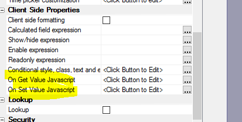
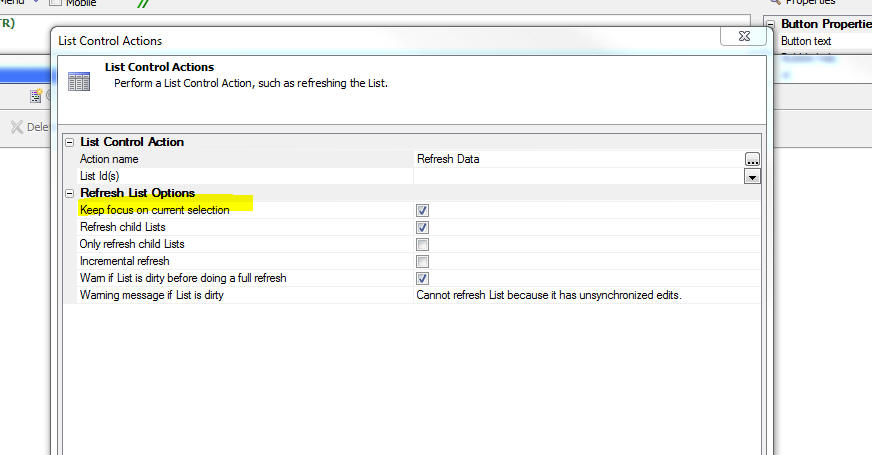

This is a list of release notes for Alpha Anywhere 4.3.2 to verify/move into the help system. The following directories are associated with this file: "Alpha_4.3.2_ReleaseNotes_files"
As this content is moved into the help system, please delete it from this file.
Guidelines:
Xbasic - AlphaDAO - Date and Number Formats - The SQL::Connection object now supports three new properties that allow you to control the format for date and number fields when the .toJSON() or .toJSONObjectSyntax() methods are called.
By default, if these properties are not set, the the date format and the decimal separator are inherited from the machine's regional settings
Note: The properties must be set on the connection BEFORE the result set is created.
Example Usage
dim cn as sql::connection
?cn.open("::Name::Access_Northwind")
= .T.
cn.PortableSQLEnabled = .t.
cn.JSONDateFormat = "yyyy-MM-dd"
cn.JSONDateTimeFormat = "yyyy-MM-dd hh:mm::ss 3"
cn.JSONDecimalSeparator = ","
?cn.tojson("select first 5 orderdate, freight from orders")
= [
{"orderdate" : "1996-07-04 00:00::00 000", "freight" : "32,38"},
{"orderdate" : "1996-07-05 00:00::00 000", "freight" : "11,61"},
{"orderdate" : "1996-07-08 00:00::00 000", "freight" : "65,83"},
{"orderdate" : "1996-07-08 00:00::00 000", "freight" : "41,34"},
{"orderdate" : "1996-07-10 00:00::00 000", "freight" : "58,17"}
]
Reports - Conditional Objects - A bug was introduced recently that broke reports with conditional objects.
UX Component - List Control - Dates - A bug was introduced in the last update where, if the client-side data format did not match the server-side data format, dates with days less than 13 (e.g. 13 Oct 2017) were not being persisted to the database correctly
| UX Component - Ink Control | Image Annotation using the Ink Control in a Data Bound UX Component |
The ink control allows you to create sketches by 'drawing' with your mouse, any type of pointing device, or with your finger (on a device that supports touch). A common use of the ink control is to annotate images. The image you want to annotate is shown as the background to the ink control and then you can draw 'on top of' the image. When the data are saved the ink is stored separately from the image in a long text field.
In this video we show how a data bound UX component that allows a user to upload images can be configured to allow the user to annotate the images that are uploaded. Watch Video - Part 1 Watch Video - Part 2 Watch Video - Part 3 Watch Video - Part 4 Download Component Download SQL Table Definition Date added: 2016-10-30 |
| UX Component - ControlBar Control | Defining Disclosure Forms using the Disclosure Form Builder |
In the video 'Displaying a Modal Pop-up Form using a Disclosure' we show how a modal pop-up form can be displayed using a Disclosure. The definition of the HTML for the form is fairly tedious because it is completely hand coded.
In this video we show how the Disclosure Form Builder can be used to make it easier to define the form HTML. Watch Video - Part 1 Watch Video - Part 2 Download Component Date added: 2016-10-30 |
| UX Component ControlBar Control | Display Modal Message Dialogs using Disclosures |
Modal messages (such as confirmations, progress, feedback) as commonly used when designing the user interface for an application. ControlBar disclosures make displaying these messages particularly easy.
In this video we show how the ControlBar can be configured to display three different types of message dialogs: basic information dialogs (one button), confirmation dialogs (two buttons) and wait dialogs (no buttons). Watch Video - Part 1 Watch Video - Part 2 Watch Video - Part 3 Download Component Date added: 2016-10-30 |
| UX Component - List Control | Specifying Sort Criteria when Filtering a List |
Action Javascript allows you to easily define fields on a UX where the user can specify search criteria for a List control on the UX ( much like the Search Part in a Grid). Now you can also define sort criteria.
In this video we show how the Filter Records in a List action in Action Javascript can be configured to allow sort criteria to be specified. Watch Video Download Component Date added: 2016-1-03 |
| UX Component - ControlBar Control | Adding List Navigation Buttons to a ControlBar |
When you define a List control, you can specify that the List should be paginated. If you set the pagination method to 'Navigation Buttons' then you must define buttons to move to the next and previous page of records. In a mobile application that uses a ControlBar in a Panel header or footer, it is desirable to place these navigation buttons in the ControlBar.
In this video we show how you can quickly add List navigation buttons to a ControlBar by selecting the 'Pre-defined buttons' option when adding ControlBar items to your ControlBar definition. Watch Video Date added: 2016-11-05 |
| UX Component - FormView Control | Using a FormView Control to Edit Data in a List Control - Master-Detail Forms - Very Large Forms |
By default, when you configure a List with a Detail View (so that edits can be made to the List data), the Detail View is composed using individual controls (e.g. Textbox, Textarea, Dropdown, etc). If the Detail View has a large number of fields, then composing the Detail View using individual controls will be inefficient and will result is a very large UX component that may not perform well.
An alternative approach is to use the FormView control to implement the List's Detail View. This is extremely efficient and will allow you to build UX components that edit very large forms but still perform very well. In this video we show how a master-detail Form is built using a FormView control to edit the fields in the Master table and a second FormView control to edit the fields in the Detail Table. The master table has 100 fields and the detail table has 100 fields, so in total, the UX component is editing 200 fields. Watch Video - Part 1 Watch Video - Part 2 Watch Video - Part 3 Watch Video - Part 4 Download Component Download Script to Create SQL Tables Date added: 2016-11-08 |
| UX Component - FormView Control | Tutorial - Building a Mobile Master-Detail Form using The List, FormView and ControlBar Controls - |
In this video tutorial we show how a mobile app can be built to implement a master-detail form using the FormView control. The app will allow users to edit data from the Customers and Orders table in the sample Northwind database. This is a classic master-detail form: Each customer has multiple orders. The UX component uses two Lists joined in a parent-child relationship. The parent List displays data from the Customer table and the child List display the related orders from the Orders table.
Each List has a Detail View, but in both cases, the Detail View is implemented using the FormView control. Once the basic functionality of the app has been built, the app is 'mobilized' by wrapping the various sections of the component in PanelCards and a ControlBar is added to implement navigation between the various parts of the application. Watch Video - Part 1 Watch Video - Part 2 Watch Video - Part 3 Watch Video - Part 4 Watch Video - Part 5 Watch Video - Part 6 Watch Video - Part 7 Watch Video - Part 8 Watch Video - Part 9 Watch Video - Part 10 Download Components Date added: 2016-11-10 |
| UX Component | Displaying a Custom Wait Message while a Large Mobile App is Loading in the Background |
If you have built a very large mobile App which takes some time to load, you might want to display a custom wait message to the user while the main UX component of your App is loaded in the background.
In this video we show how this can be done using a simple 'startup' UX component. Watch Video Download Components Date added: 2016-12-11 |
| UX Component - PhoneGap | PhoneGap - Using the PhoneGap - Open File with Native Application Action to View PDF Files in a Mobile Application |
The PhoneGap cordova-open plugin allows you to open various file types using the associated native app on a mobile device. For example, if you open a .pdf file, the PDF file is displayed using the native PDF viewer app on the mobile device. If you open a .mp4 file, the video is displayed using the native video viewer on the device. A common use case for this plugin is to download several files when a connection is available so that the files can then be viewer later on when no connection is available.
In this video we show how an application is built that shows a list of PDF files. These files are downloaded from the server and stored in the filesystem on a mobile device. Then we show how each of the downloaded files can be viewed using the PDF viewer on the mobile device. Because the PDF files are stored in the filesystem on the device, they can be viewed even if the device no longer has a connection. The application uses the 'PhoneGap - Open File with Native Application' action to display the .pdf file. Watch Video - Part 1 Watch Video - Part 2 Watch Video - Part 3 Date added: 2016-12-27 |
| UX Component - PhoneGap | PhoneGap- Viewing Reports in PDF Format on a Mobile Device |
The PhoneGap cordova-open plugin allows you to open files (such as .pdf files) using the natvie application associated with that file type on a mobile device. This plugin is particularly useful for viewing PDF files. The Alpha Anywhere report writer can save reports as PDF files. The cordova-open plugin therefore fits really well with the Alpha Anywhere report writer because you can build applications that generate reports as PDF files and then display the reports on a mobile device using the cordova-open plugin.
In this video we show how you can use Action Javascript (the 'PhoneGap - Open File with Native Application' action) to generate a PDF file from an Alpha Anywhere report, then download the resulting PDF file to a mobile device and display it using the native PDF viewer. Watch Video - Part 1 Watch Video - Part 2 Date added: 2016-12-27 |
Xbasic - Javascript Web Tokens (JWT) - Additional Options - Additional options have been added to the Xbasic classes for generating Javascript Web Tokens. For more details refer to the documentation.
IIS Application Server - PKI Authentication - Support has been added for PKI authentication. For more details refer to the
documentation.
Watch Video - Part 1
Watch Video - Part 2
UX Component - Client-Side Properties - On Get Value and On Set Value - Two new client-side properties have been added for Data Controls in a UX component.

In both cases, your Javascript can reference a variable called value and must return a value. For example, in the following example, the .getValue() method will return the upper case version of the control's value
return value.toUpperCase()
These methods can be used to translate a stored value into a display value and vice versa. For example, you might want to display a part description, but store the part number. The data used to to the translation might be stored in a client-side data cache.
Alpha Anywhere Application Server - Building Connection Strings - If you have a remote server that does not have the Alpha Anywhere development version installed, building an ad-hoc connection string that you can paste into the a5_appllication.a5i file can be difficult.
There is now a hyperlink on the
Web Server Settings dialog on the Other tab to Open the Connection
String Builder Genie. This opens the regular connection string builder where a new connection can be built and tested. It will also verify if the correct client driver is installed, as the test connection option will fail if the driver is not correct. The generated string is shown in a simple dialog with an option to
Copy to clipboard when the genie is closed. This allows creating and testing a connection in the same environment where it will be used.
UX and Grid Component - Live Preview - Edge - When you do a Live preview from the UX or Grid, you can now select Microsoft Edge as the target. (For Windows 10 and above)
UX Component - List Control and ViewBox Control - Text Select - A new property 'Allow text select' allows you to enable/disable the ability to select text in a List or ViewBox control. Previously this always defaulted to true. Now, this property defaults to false.
UX Component - List Control and ViewBox Control - Multi-select - Shift+Click - When doing a multi-select in a List or ViewBox that is configured to allow multiple selections, shift+click will now select multiple values, following the standard Windows conventions.
Web Publishing - HTTP publish and Optimized Publish - These publish methods will now force a reload of the security data and will clear the UX component cache, so any changes should be reflected in the first request after publish.
UX Component - List Control - Refresh List Data Action - Keep Focus - Child Records - If you refresh List data and you select the option to keep focus on the current selection, child records (if any) will also keep their focus. Previously only the record in the parent List kept its focus.

UX Component - Captcha Controls - You can now define the style for the captcha control error message and you can control where the message is displayed.